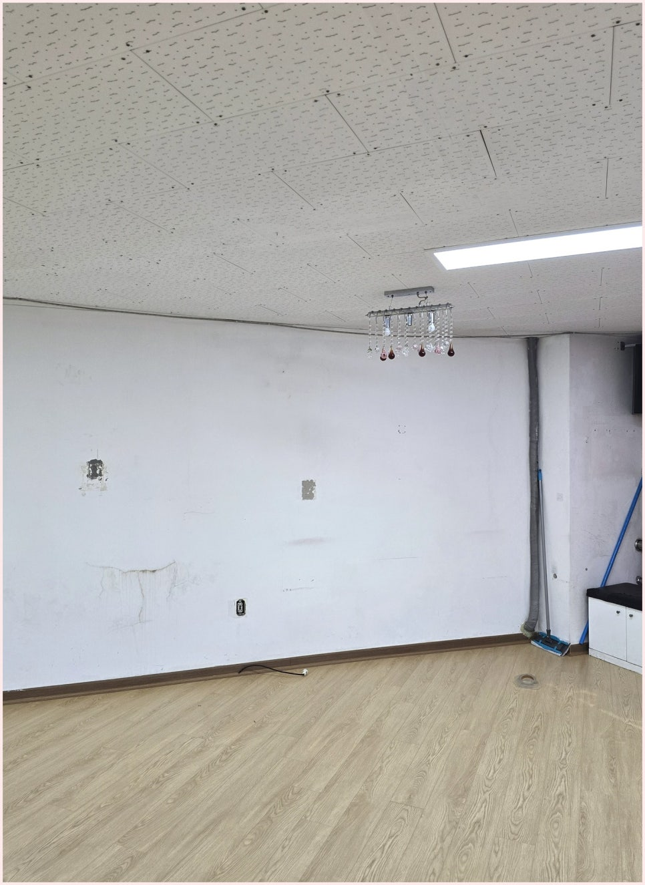
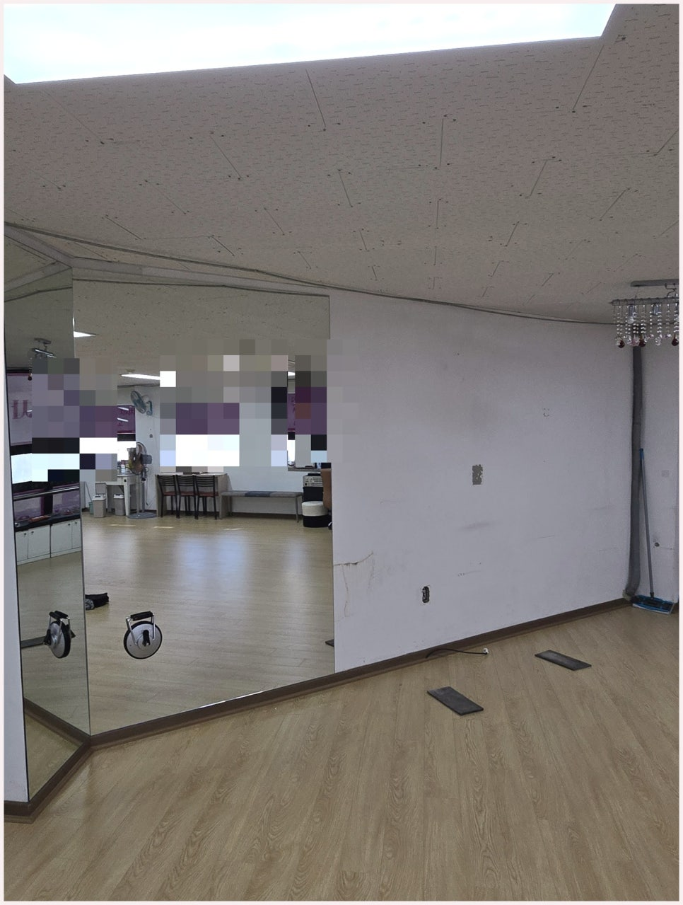
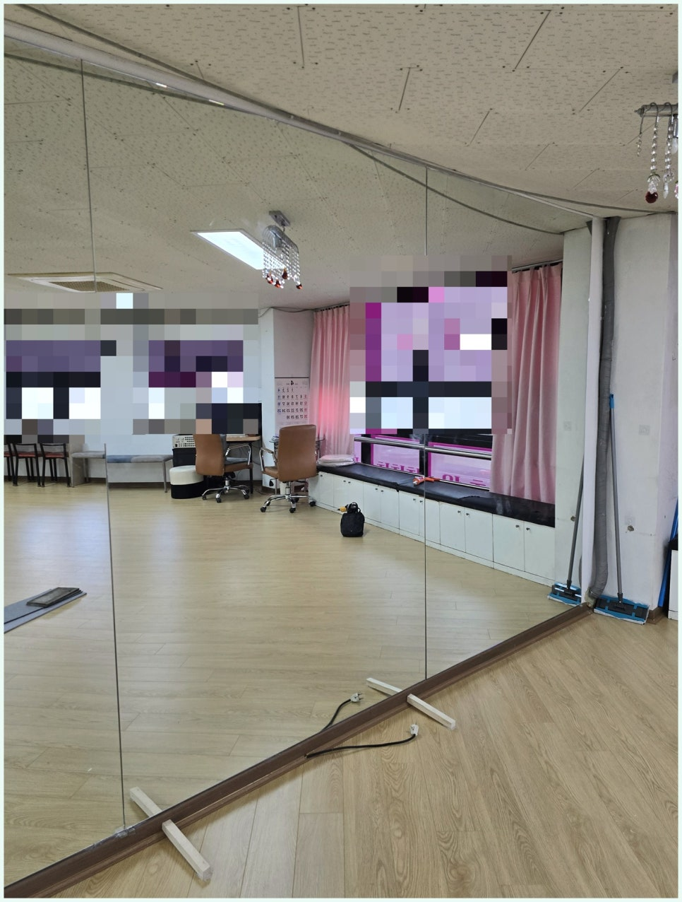

벽거울 시공은 거울을 몇 장으로, 한 장을 얼마 크기로 나눌지부터 정해야 순서와 견적이 함께 나옵니다. 경기도 광주시의 한 줌바 수업 학원은 한쪽 벽에만 거울이 있었고, 그 옆 비어 있던 긴 흰 벽까지 거울로 넓히고 싶어 했습니다. 높이는 기존 거울에 맞추고 가로만 나눠 같은 크기 일곱 장으로 벽 한 면을 덮었습니다.
한눈에 보기
| 작업 | 빈 벽 한 면을 거울로 채우기(옆 벽 기존 거울에 이어서) |
|---|---|
| 지역 | 경기 광주시 |
| 장소 | 줌바 수업을 하는 학원 연습실, 벽 중간에 기둥 있음 |
| 거울 | 5T(5mm), 1100×2100mm 일곱 장, 이으면 가로 약 7.7m |
| 높이 | 아래는 걸레받이 바로 위, 위는 천장 밑까지(옆 벽 거울과 같게) |
| 면적·비용 기준 | 약 180자, 자당 6천~1만 원 기준 108만~180만 원(시공비·부자재 포함) |




넓은 벽에 거울붙이기, 왜 높이부터 정하나요?
벽이 7m를 넘으면 큰 거울 한두 장으로는 끝나지 않습니다. 세로 길이를 먼저 정하고, 그다음 벽 길이를 장수로 나눕니다.
이 학원은 옆 벽 거울이 이미 걸레받이 위에서 천장 가까이까지 올라가 있었습니다. 새로 붙일 거울도 그 선을 그대로 따라야 두 벽이 한 거울처럼 이어지므로 세로는 2100으로 고정했습니다.
팔을 머리 위로 뻗으며 뛰는 수업이라 위쪽이 낮으면 손끝이 잘리고, 바닥에서 띄우면 발 스텝이 안 보입니다. 아래를 걸레받이에 붙여 세운 이유입니다.
한 장 폭을 1100으로 나눈 기준은 무엇인가요?
벽 길이를 일곱으로 나누니 한 장이 1100 정도가 됐습니다. 이렇게 하면 세로 이음선은 여섯 줄 생깁니다.
폭을 더 키우면 이음선은 줄지만 무게가 따라 늘어납니다. 이 크기 5T 거울 한 장이 29kg 남짓이라, 더 크면 출입문이나 계단으로 옮기는 일부터 어려워집니다.
폭을 너무 좁히면 반대로 이음선이 촘촘해져 비친 모습이 자꾸 끊깁니다. 그 사이에서 고른 값이 1100이었습니다.
이 현장 작업 순서
- 옆 벽에 붙어 있던 기존 거울의 아래·위 높이를 확인했습니다.
- 새 거울 세로를 2100으로 정하고, 비어 있던 흰 벽 길이를 일곱 등분해 한 장 폭을 1100으로 잡았습니다.
- 같은 크기 거울 일곱 장을 걸레받이 선에 맞춰 한 줄로 세웠습니다.
- 벽 중간 기둥에서는 거울이 모서리를 따라 꺾여 이어지므로, 그 자리의 모서리 선을 따로 맞췄습니다.
- 다 붙인 뒤 비스듬히 서서 이음선 간격이 고른지, 위쪽이 천장 밑까지 닿았는지 확인했습니다.
대형거울가격은 어떻게 계산되나요?
거울 값은 '자'(30×30cm) 단위 면적으로 셉니다. 1100×2100 한 장이 약 25.7자, 일곱 장이면 180자 안팎입니다.
청년유리 거울 시공 기준이 자당 6천~1만 원이라 이 벽은 108만~180만 원 범위로 계산됩니다. 시공비와 부자재비가 들어간 금액이고, 이 정도로 넓은 벽은 낮은 단가 쪽을 적용합니다.
자주 묻는 질문
- Q. 연습실 거울을 바닥에서 띄워 붙이기도 하나요?
- 공이나 운동 기구가 거울 아래쪽에 부딪힐 일이 잦은 곳은 바닥에서 20~30cm 띄우기도 합니다. 발 동작을 봐야 하는 춤 수업이라면 이 현장처럼 걸레받이 바로 위부터 세우는 편이 낫습니다.
- Q. 벽 길이만 알면 몇 장이 필요한지 알 수 있나요?
- 벽 가로 길이와 천장 높이 두 숫자만 있으면 세로를 정하고 몇 장으로 나눌지 계산해 드립니다. 기둥이나 문이 있으면 그 부분 사진을 함께 보내 주세요.